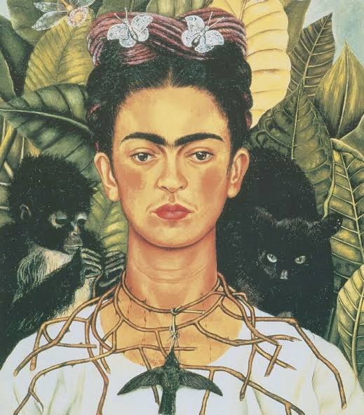

Arte abstrata é só rabiscos

MITO O Por trás de uma boa obra abstrata existe um profundo estudo de composição, teoria das cores, equilíbrio e expressão emocional.
Arte abstrata é só rabiscos
MITO O Por trás de uma boa obra abstrata existe um profundo estudo de composição, teoria das cores, equilíbrio e expressão emocional.

É obriatório nascer com um dom para desenhar.

MITO Embora algumas pessoas tenham facilidade inicial, a arte é, acima de tudo, prática, estudo e persistência.

Van Gogh vendeu apenas uma obra durante toda sua vida

VERDADE Oficialmente, a única venda documentada enquanto ele estava vivo foi a tela A Vinha Encarnada (The Red Vineyard).

Apenas arte realista é considerada arte real

MITO A arte não precisa apenas "copiar" a realidade; seu valor muitas vezes está no conceito, na emoção, na originalidade e na provocação.

A IA será o futuro da arte e vai destronar artistas reais

MITO A IA é uma ferramenta poderosa e está transformando a indústria, mas ela opera combinando padrões de dados já existentes.

A cor azul já foi mais valiosa que o ouro

VERDADE Na Renascença, o pigmento azul-ultramarino genuíno era feito a partir da trituração de uma pedra semipreciosa chamada lapiz-lazúli, importada do Afeganistão.